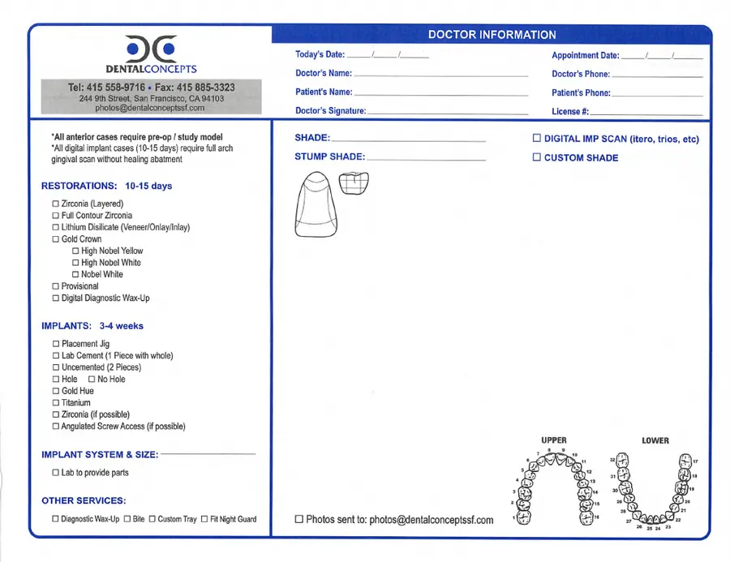
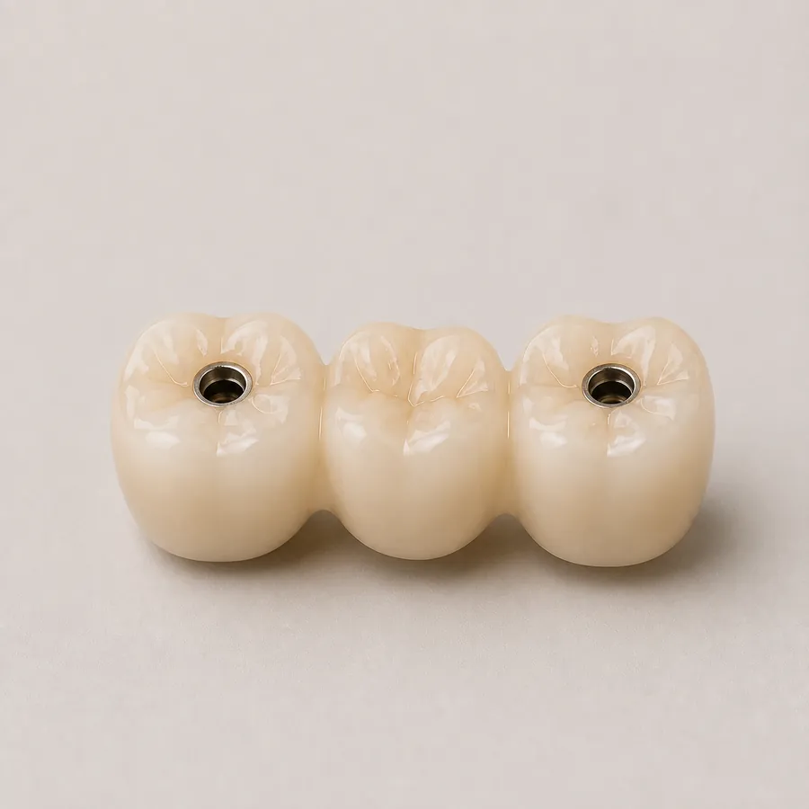
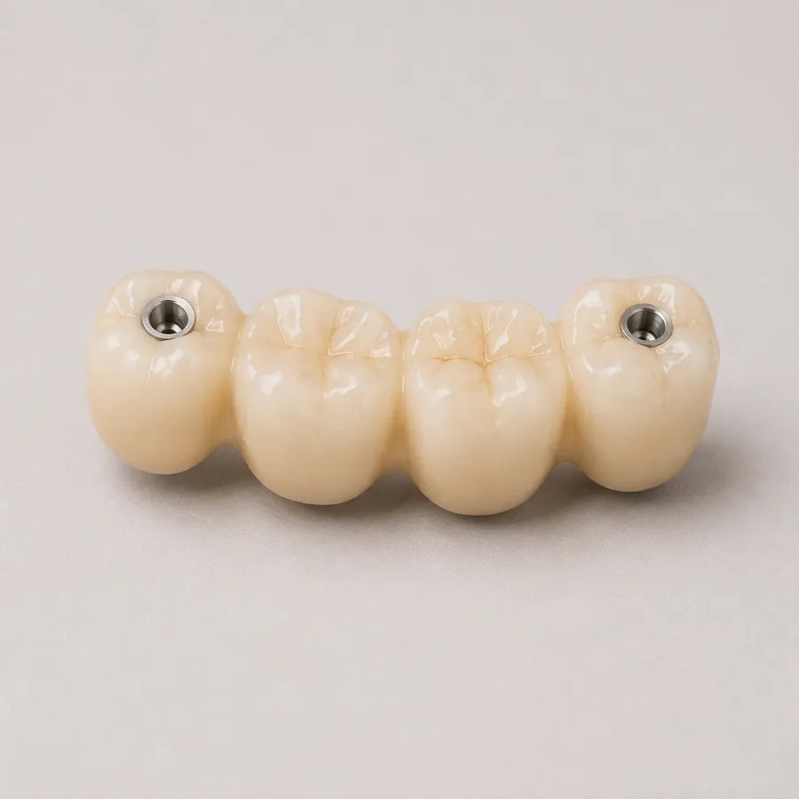
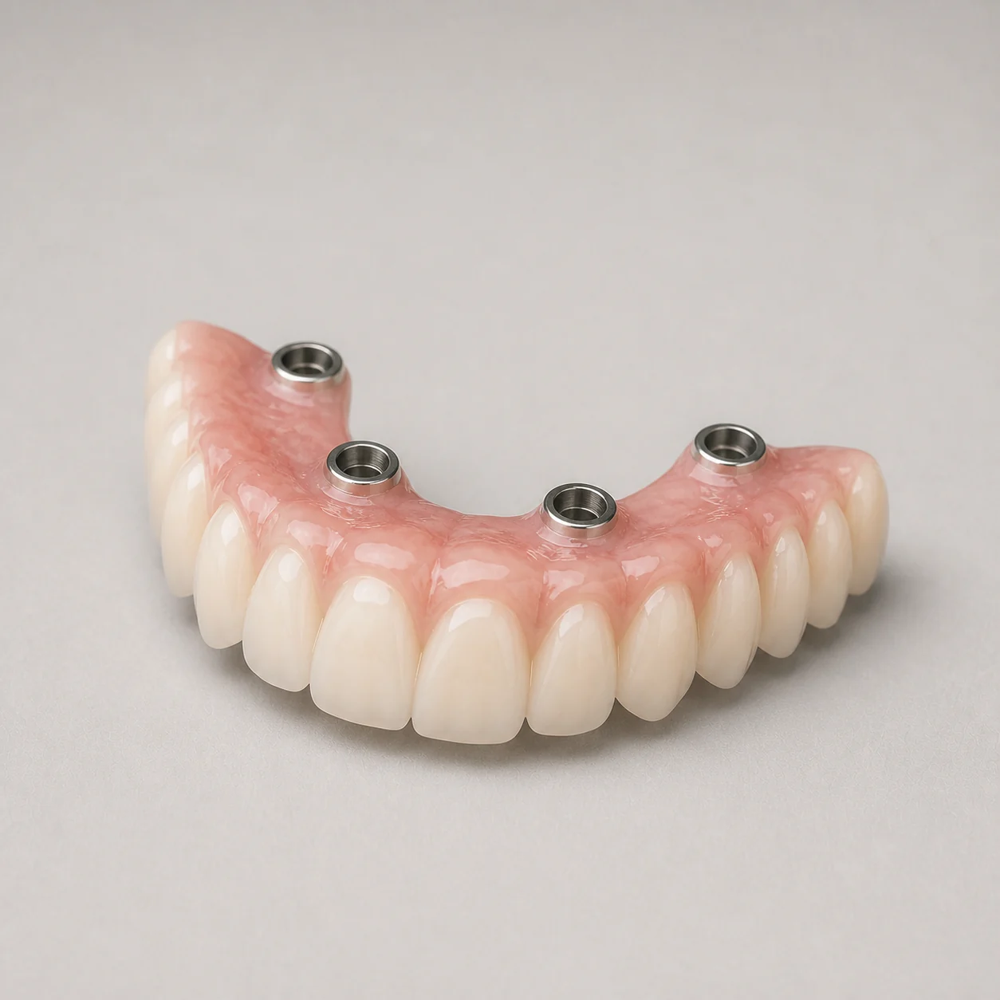
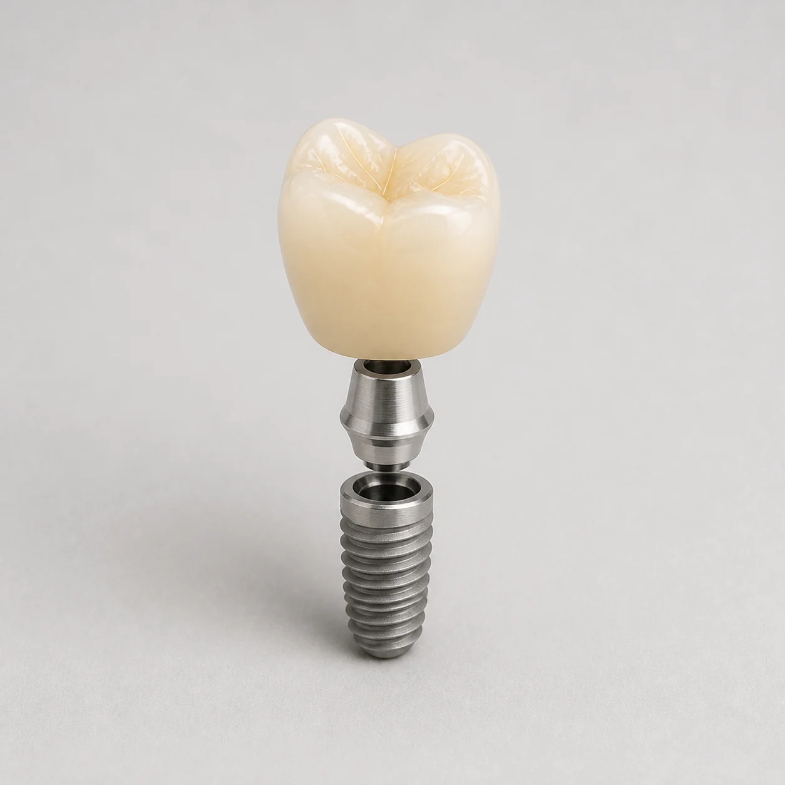
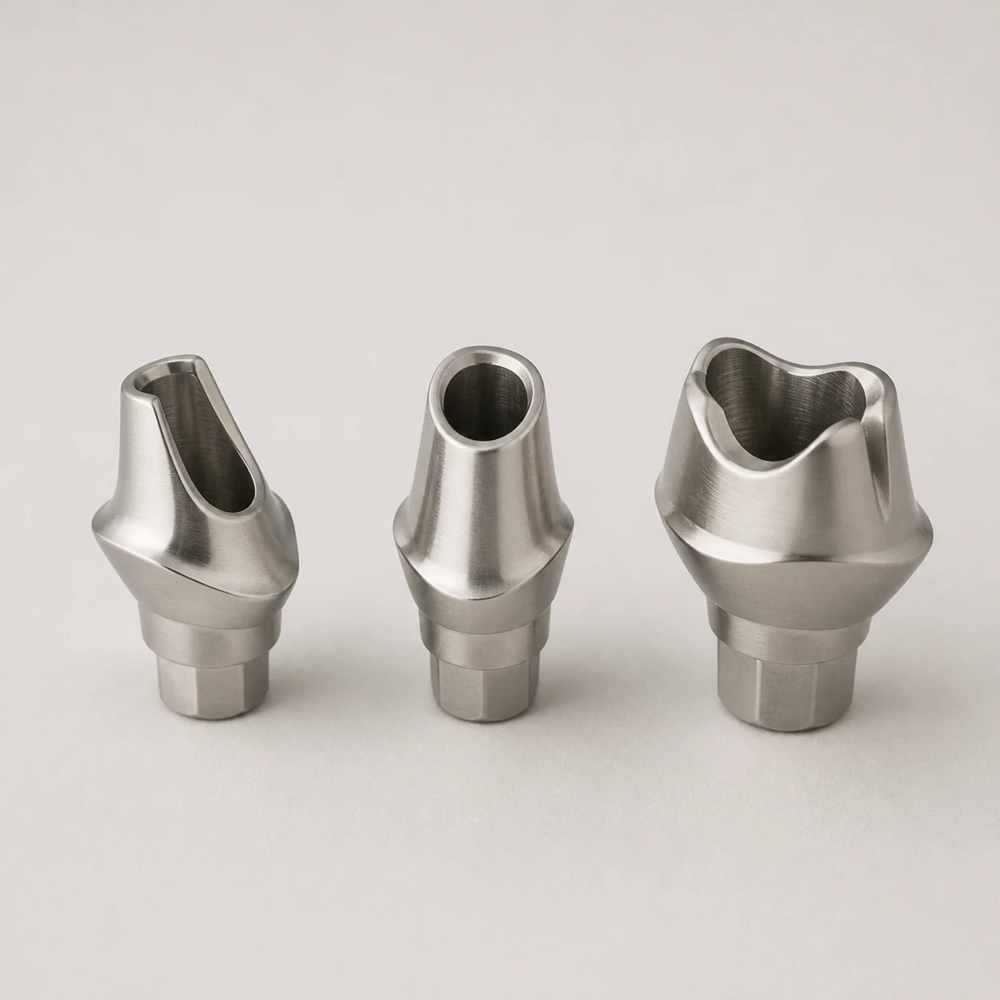
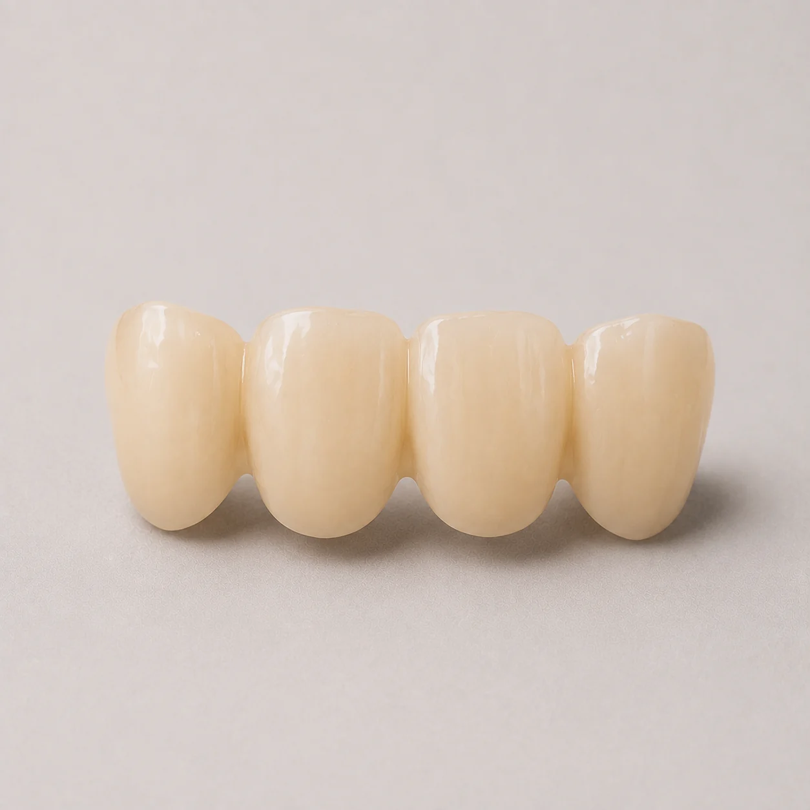

Prescribe
Tell us exactly what you need
Tick “Provisional” on the RX form, add the shade, and send your impression or scan with the opposing arch and bite. For implant temporaries, add the implant system and size.

Provisional crowns and temporary implant abutments that protect the site, trial shape and bite, and help shape the soft tissue while the final is made.

Tick “Provisional” on the RX form, add the shade, and send your impression or scan with the opposing arch and bite. For implant temporaries, add the implant system and size.
Tick “Provisional” on the RX form, add the shade, and send your impression or scan with the opposing arch and bite. For implant temporaries, add the implant system and size.

Tell us whether the temporary is there to protect, to trial shape and bite, or to shape the soft tissue, and we design it for that.

Our RX form lists provisionals at 10 in-lab working days for 1 to 3 units and for 4 or more. Implant temporaries depend on the case, so confirm timing with the lab.

Unsure about anything on the list? Call 1-800-700-LABS before you send the case.
Talk to the labSingle implant crowns, full arches and everything between, on one RX form. Call the lab early on any implant case.
Discuss a caseOne prosthesis replacing a whole arch, fixed to several implants.

Screw-retained crowns for single implants.

Designed for one patient’s implant position and soft tissue.

Provisional crowns and abutments while the final is made.

Book a 15 to 20 minute custom shade appointment at the lab on (415) 558-9717, or email shade photos to photos@dentalconceptssf.com. Either way, the technician building the restoration gets a proper look at the tooth.
Book a shade appointmentDesigned, made and finished at our lab on 9th Street. Your cases aren’t sent overseas.
A well-made temporary makes the final restoration easier to get right, with the tissue shape and bite worked out in advance.
Questions about prep, design or shade go straight to the people making your case.
Placeholder: paste a real quote from a dentist about our temporary crowns & abutments here, in their own words.
New to the lab? Email accounts@dentalconceptssf.com to open an account, download the RX form, then confirm with the team how to send impressions or scans.
Need a specific answer? Contact the lab team directly.
Talk with the labA temporary implant crown is a provisional crown fixed to an implant while the final restoration is made. It protects the site, lets you check shape and bite, and can help shape the soft tissue during healing. We make temporary implant abutments too.
Yes. Tick “Provisional” on the RX form for temporary crowns on prepared teeth. For implant temporaries, add the implant system and size as well.
Our RX form lists provisionals at 10 in-lab working days for 1 to 3 units and for 4 or more. Timing for implant temporaries depends on the case, so confirm it with the lab.
Yes, that’s a common reason to order one. Mention the wax-up on the RX form, and see our digital wax-up page for how the plan is made.
Yes. Tick “Digital imp scan” on the RX form. We accept scans from iTero, Trios and similar systems. Contact the lab to confirm how to send the files.
Yes. Tick “Lab to provide parts” on the RX form and write in the implant system and size.
Our RX form covers provisionals for up to six months, for the cost of materials and workmanship, once the restoration is returned to us. Restrictions apply.
Call 1-800-700-LABS or email the team before you send patient records, and we’ll confirm the best way to get the case to us.
Contact the lab